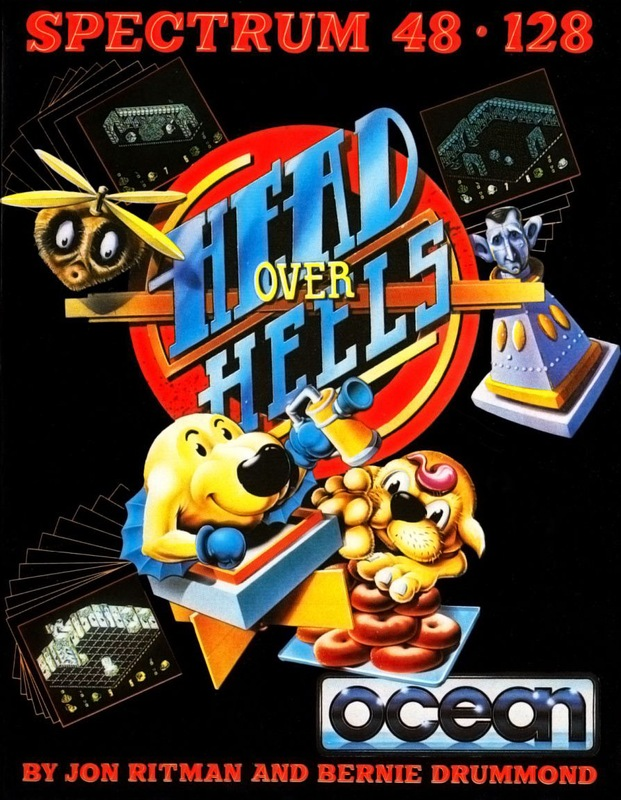
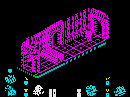
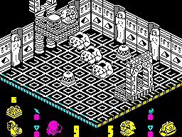

Head Over Heels


{kind=link}

| Publisher: | Ocean |
| Price: | £7.95 |
| Year: | 1987 |
| Source: | CRASH, Issue 39 |

In a far distant galaxy, many light years away, lie four worlds enslaved by an an evil empire. On each, unrest simmers, suppressed by the dictatorial Emperor who rules his territories from the planet Blacktooth. Neighbouring worlds look to the dark skies and wonder. In fear they send two spies from the planet Freedom, to kindle revolution upon the slave planets, and recover the crowns that have been lost. Only in this way can the might of the Empire be fettered.

taking, if only Heels can cross the room
The spies they send are Head and Heels, two bubble-bodied creatures living in unity. Both have different abilities, Head descended from flying reptiles and can jump twice his own height and guide himself through the air, On the other hand, Heels has legs like pistons, and is a powerful runner capable of leaping his own height. When together, Head sits like a lady’s Sunday bonnet on Heels’ head.
Their mission has not begun well, captured and separated, they have been imprisoned in the castle headquarters of the planet Blacktooth. All is not lost, but Head and Heels must use all of their skill to keep their eight lives intact, and escape from the strangeness of their prison surrounds.
Head and Heels can be moved independently with an illuminated icon showing which character you currently control, both icons are lit when the two are joined. The pair can move in four directions when on the ground, and upwards by using their jumping abilities. To escape from prison, both Head and Heels must pass through a series of rooms and corridors, some filled with such deadly obstacles as poisonous Marmite jars, electrified floors, and attacking monsters — touching these results in evaporation into a cloud of bubbles.
However, Head and Heels do encounter objects that can help them in their escape, though initially the purpose of each may not be obvious — Stuffed Rabbits give extra lives and abilities, Springs boing them through doorways, Prince Charles’s head at last finds a purpose — being used as a sort of animated fork-lift truck, Reincarnation Fish give life after death (by returning the player to their collection point at the beginning of a new game), Doughnuts provide ammunition, and Teleports transport the two heroes from room to room. Only through trial and error can they hope to successfully use such equipment to best advantage and safely leave the castle.
Because of their separate and individual talents, it is occasionally necessary for Head and Heels to split up in order to negotiate certain obstacles. Decisions of this nature should be made when a puzzle appears to be accomplished by the dual creature, but in general it’s usually a good idea to keep the pair together.

Hush Puppies save him from the
patrolling guards
Once outside the prison walls, Head and Heels have to decide whether to return to their home planet Freedom, or join together as a team, and use their individual skills to continue their search for the lost crowns of the slave planets. Whatever they decide, they must make their way to Moonbase Headquarters, and teleport themselves away.
For any one slave planet to fail from Blacktooth’s grasp would be disruptive, but its expansionist plans would roll inevitably on. Such is the Empire’s power that with the slow passing of time, a single liberated planet would be re-enslaved, and its inhabitants crushed once more. Therefore all of the slave planets must be set free before the Empire’s power can be finally destroyed.
Egyptus, with its city of huge pyramid tombs must tumble; the harsh and mountainous prison planet of Penitentiary must fall; Safari, the densely vegetated hunting-planet, whose natives live in wooden forts and set traps for the unwary, must be prised from the Empire’s grip; and Book World, the vast planetary library of cowboy books to which only the Emperor’s minions have access, must be turned against its master. On each the crown must be found and collected.
When the crowns of all four slave planets are collected, the Emperor can be killed, and with him the evil Blacktooth Empire. The emperor’s death signals the end of Head and Heels’ task, and they can return home to their planet Freedom, to be acclaimed as heroes.
CRITICISM
“There have been quite a few games of this style lately — and pretty as they are, many have been severely lacking in gameplay. Happily, the two programmers have worked extremely hard to make Head Over Heels one of the most fun to play and absorbing games available at the moment. The problems are all excellent... some are fairly easy while others require a lot of thought, time and patience. The graphics are awesome, the meticulous attention to detail is similar to that in Nosferatu, but the overall effect is much better. The sound could do with a little tuning but it’s generally good, there are loads of effects during the game and the tune on the title screen is bearable. Head Over Heels is a must for any self respecting Spectrum owner — what more can I say?”
BEN
“This is definitely the best Ritman/Drummond game yet — it’s even better than Batman! Head Over Heels is the cutest arcade adventure yet, the characters are extremely detailed, very lifelike and cuddly. There are loads of puzzles to be solved, ranging from very easy to particularly hard brain teasers, which means it will appeal to all types of people. The sound effects on the 48K version are just as appealing as the 128K, although the tunes are a bit restricted. The presentation is superb, as we’ve come to expect from all Ritman/Drummond games. Head Over Heels is one of the most addictive, playable, cuddly, cute and fun games ever. Miss it at your peril!”
PAUL
“Wow! this is the ultimate game! Head Over Heels has some fantastic graphics; it proves to all disbelievers that there is still something left in the forced perspective 3D world; the characters are superbly designed, and the animation has to be seen to be believed! The front end is brilliantly designed, and everything fits together perfectly, bringing some of Jon Ritman’s excellent ideas to full fruition. The playability is beyond compare, as too are its addictive qualities — Head Over Heels is excellent value for money, and a must for anyone’s collection.”
MIKE
COMMENTS
| Control keys: | Definable, up, down, left, right, jump, swap, pick up/drop, shoot |
| Joystick: | Kempston, Fuller, Interface 2 |
| Use of colour: | Monochromatic playing areas, with colourful icons |
| Graphics: | Excellently detailed characters and settings |
| Sound: | Adequate title tune and bright atmospheric effects |
| Skill levels: | One |
| Screens: | Over 300 |
| General rating: | The best fun you’re likely to have with a Spectrum for quite some time. |
| Presentation: | 90% |
| Graphics: | 97% |
| Playability: | 96% |
| Addictive qualities: | 95% |
| Value for money: | 91% |
| Overall: | 97% |
“Head Over Heels is offered no real gameplay enhancement by the 128K Spectrum — there are no extra screens, problems or worlds. The added extra, as usual, is musical — there’s a tune that plays throughout, which tends to get on your nerves after a couple of hours. For those with sensitive ears there’s an ‘adjust the sound’ option so you can turn it off altogether or revert to the 48K effects. A couple of changes have been made to the Front End to make things a little prettier, but maybe a few extra rooms or problems would have been a better addition. Despite the lack of improvement it’s still highly recommended!”